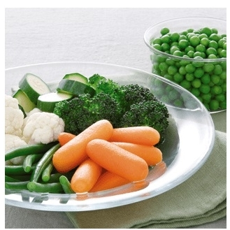

Mikrobangų krosnelės | AEG
 Jūsų gaminio registracija Rasti parduotuvę Prisijungti Menu Produktai AtgalProduktai
Drabužių priežiūra
Džiovyklės Priedai Skalbyklės Skalbyklės su džiovinimuIndų plovimas
Indaplovės PriedaiMaisto gaminimas
Garų rinktuvai Kaitlentės Kompaktiškų įmontuojamų prietaisų asortimentas Mikrobangų krosnelės Orkaitės Pašildymo stalčiai Priedai Vakuumavimo stalčiai ViryklėsPriedai
Drabužių priežiūros priedai Indaplovių priedai Maisto gaminimo priedai Šaldymo priedaiŠaldymas
Šaldikliai Šaldytuvai Šaldytuvai su šaldikliu Įkvėpimas AtgalĮkvėpimas
NAUJŲ SKONIŲ HORIZONTAI
Mėgaukitės tobulais rezultatais kiekviename gaminimo procese.
NEPRIEKAIŠTINGA APSAUGA
Sužinokite kaip dar rūpestingiau prižiūrėti savo drabužius, kad šie tarnautų ilgiau. Naujas požiūris – teigiamiems mados kultūros pokyčiams.
Pagalba Jūsų gaminio registracija Rasti parduotuvę Prisijungti PaieškaMikrobangų krosnelės
Pašildykite gardų likusį maistą. Arba lengvai ką nors paruoškite, naudodami AEG mikrobangų krosnelę su grilio funkcija.
Rodyti visas mikrobangų krosneles4 iš 4
Mikrobangų krosnelės
4 iš 4
Filtras Uždaryti 4 iš 4
Filtras Atstatyti paieškąSpalva
Juoda Nerūdijančio plienoGalia, W
800 900Plotis
45 cm 60 cm Uždaryti Show 1 result Show 4 results Montuojama Mokrobanginė-orkaitė 25.37 l Juoda/nerūdijančio plieno nepaliekanti pirštų antspaudųMBE2658SEM
Daugiau maisto ruošimo parinkčių jūsų virtuvėje Mikrobangų krosnelę atidarysite vienu prisilietimu Greita prieiga prie pritaikytų funkcijų Aptakus dizainas greitam valymui Žiūrėti gaminį Laisvai pastatoma Mokrobanginė-orkaitė 20.31 l Nerūdijančio plienoMFD2025S-M
Pasiekite puikių rezultatų visuomet, kai tik gaminate valgį Mikrobangų ir grilio funkcija vienu metu Puikūs rezultatai vieno mygtuko paspaudimu Tiksli visų maisto gaminimo programų kontrolė Žiūrėti gaminį Montuojama Mokrobanginė-orkaitė 25.37 l Juoda/nerūdijančio plieno nepaliekanti pirštų antspaudųMBE2658DEM
Patiekite gardžius valgius Greitai ir veiksmingai atšildykite maistą Greita prieiga prie pritaikytų funkcijų Aptakus dizainas greitam valymui Žiūrėti gaminį Montuojama Mokrobanginė-orkaitė 16.8 l Juoda/nerūdijančio plieno nepaliekanti pirštų antspaudųMBB1756SEM
Daugiau maisto ruošimo parinkčių jūsų virtuvėje Mikrobangų krosnelę atidarysite vienu prisilietimu Greita prieiga prie pritaikytų funkcijų Aptakus dizainas greitam valymui Žiūrėti gaminį Maisto gaminimas Mikrobangų krosnelės Į puslapio viršųSkonis
Naujų skonių horizontai Skonio mokslas „Mastery“ kolekcija - Indukcinės kaitlentės Garinės orkaitės Gartraukiai Šaldymas Indaplovės Pirkimo vadovai Orkaičių KaitlenčiųPriežiūra
Rūpinkitės daugiau Naujoji drabužių priežiūros linija - Skalbyklės Skalbinių džiovyklės Skalbyklės-džiovyklės Pirkimo vadovai Skalbyklių Skalbinių džiovyklių„AEG Lietuva“
Akcijos Apdovanojimai ReceptaiKlientų aptarnavimas
Rasti parduotuvę Rasti techninio aptarnavimo centrą Atsisiųsti naudojimo instrukcijas Atsisiųsti brošiūras Garantija DUK ArchiveSusisiekite su AEG
Susisiekite su mumis Užregistruokite gaminį AEG Facebook Apie AEG AEG TERMINAI IR SĄLYGOS Data privacy statement„AEG“ svetainės optimizavimui ir reklamos bei rinkodaros tikslams naudoja slapukus ir įvairias stebėjimo technologijas. Jei sutinkate, anoniminiai slapukai naudojami siekiant gerinti mūsų svetainę ir paslaugas. Taip pat naudojamas trečiųjų šalių turinys. Kai kuria informacija, užtikrindami saugumą, galime dalytis su patikimais partneriais. Skiltyje Duomenų privatumo patvirtinimas galite sužinoti daugiau ir bet kada pakeisti nuomonę.
„AEG“ svetainės optimizavimui ir reklamos bei rinkodaros tikslams naudoja slapukus ir įvairias stebėjimo technologijas. Jei sutinkate, anoniminiai slapukai naudojami siekiant gerinti mūsų svetainę ir paslaugas. Taip pat naudojamas trečiųjų šalių turinys. Kai kuria informacija, užtikrindami saugumą, galime dalytis su patikimais partneriais. Skiltyje Duomenų privatumo patvirtinimas galite sužinoti daugiau ir bet kada pakeisti nuomonę.
Back Sutinku Nesutinku